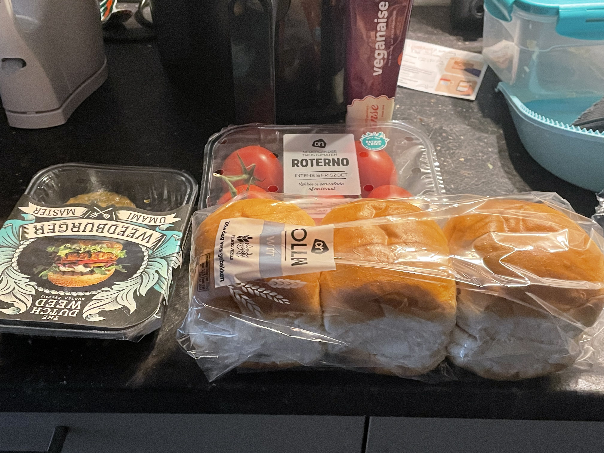
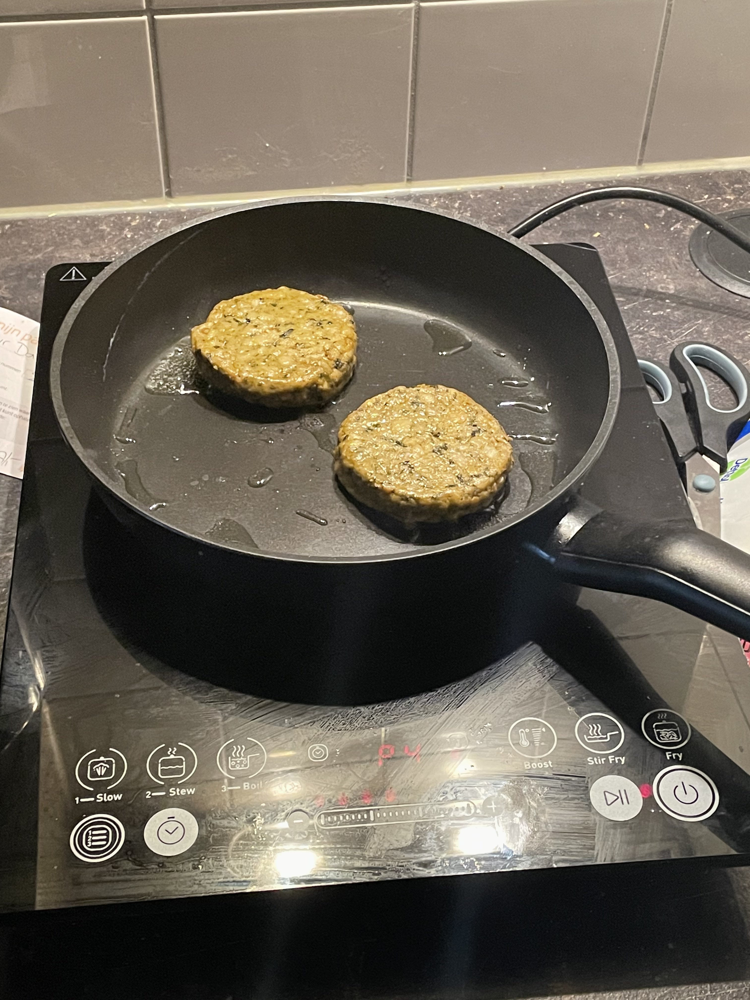
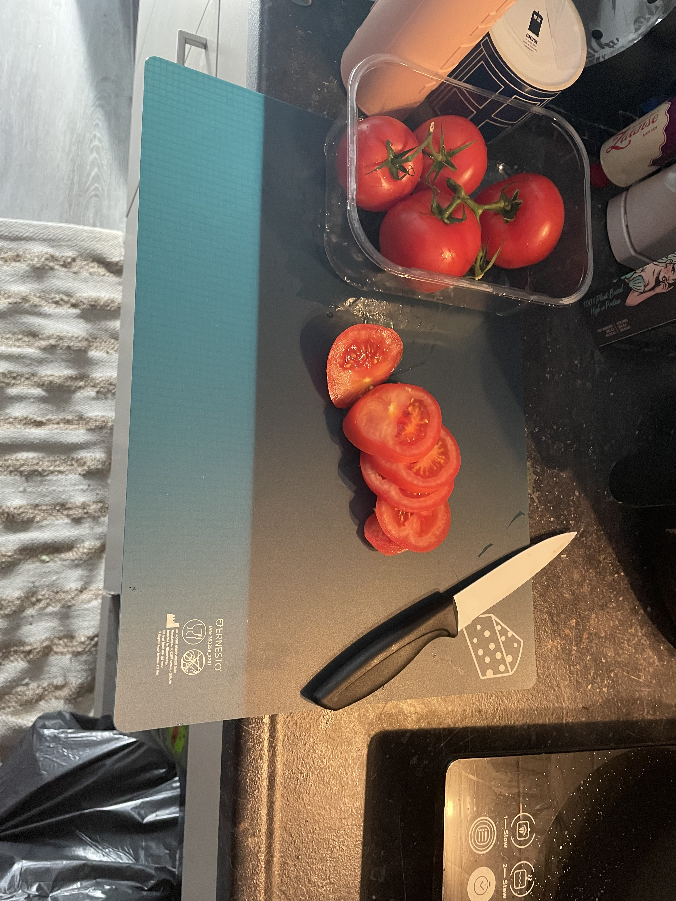
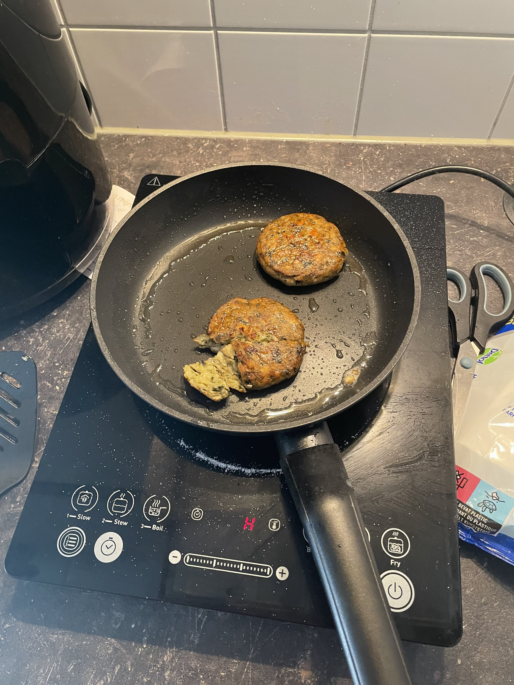
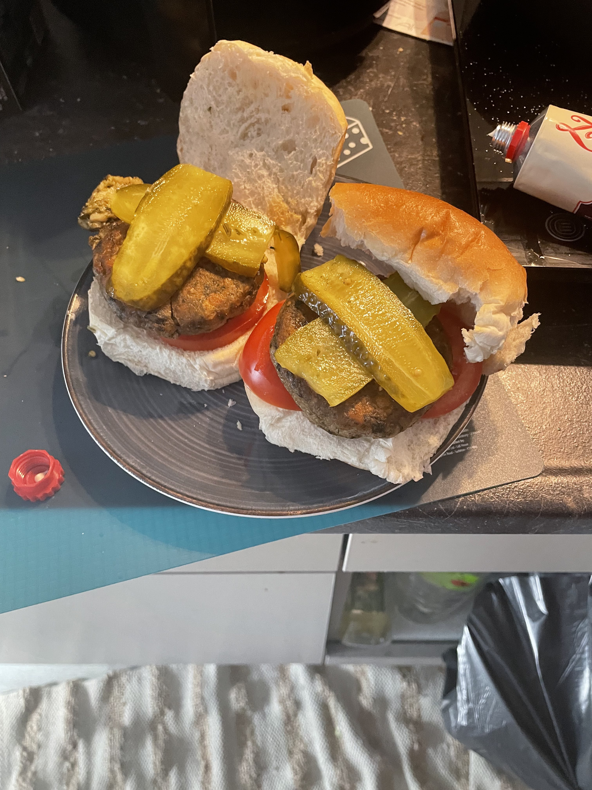

Preparation
For these delicous burgers we used white buns, tomatoes, pickles and vegan mayo
We just got these patties from the store so we didn't wait long before chucking them into the pan.
As always, I don't have exact temperatures or times for you (Worlds best cooking blog right here)
While the patties were a sizilin', we cut up the tomatoes and toasted the buns in the airfryer
After seeing the burgers looked crispy, I decided to cut one open with the spatula to check if the inside looked cooked
And before we knew it, we had to lovely looking burgers ready for human consumption
Thoughts
all in all, I didn't think they were that good. The texture was intersesting, but there just wasn't any taste there to back it up. Maybe the pickles were too overpowering?
A real ghost burger, just in time for Halloween!